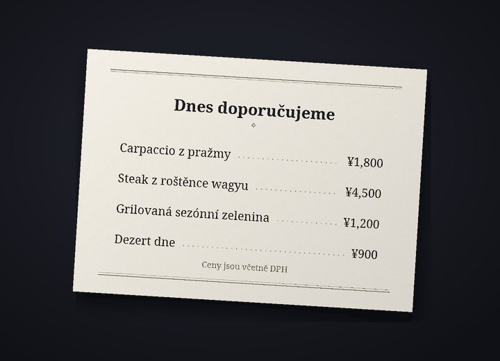

Bot pro překlad chatu na Discordu
Na Discordu každý píše svým jazykem
Cozirom je bot pro Discord, který překládá chat do jazyka protějšku. Jakmile si ho zapneš, tvoje zprávy se budou zveřejňovat přeložené pod tvým jménem a profilovou fotkou a přeloží se i text na obrázcích.
Zobrazit, jak začítZobrazit tarify
Překlady dělá AI (Claude od Anthropic). Může se splést, takže u důležitých věcí zkontroluj i originál.
Co bot umí
Jeden bot přeloží text, obrázky i hlas
Limity tarifů se počítají v překladech. Jedna zpráva přeložená do jednoho jazyka je 1 překlad.
6 funkcí
Kolik překladů
Automatický překlad
Stačí jednou zadat
/preklad zapnouta tvoje zprávy na tomhle serveru se budou zveřejňovat v jazyce protějšku pod tvým jménem a profilovou fotkou. Originál zůstane pod překladem malým písmem a tlačítko ukáže celý originál.
ukáže celý originál.Překlady1 za zprávu
Text na obrázcích
Menu, herní obrazovky, memy: když je na obrázku text, bot ho přečte a přeloží. Výsledek otevřeš ikonou
 pod obrázky lidí se zapnutým překladem nebo překladem přes pravé tlačítko. Vidí ho jen ten, kdo o něj požádal, a obrázky bez textu se nepočítají.
pod obrázky lidí se zapnutým překladem nebo překladem přes pravé tlačítko. Vidí ho jen ten, kdo o něj požádal, a obrázky bez textu se nepočítají.PřekladyObvykle kolem 9 za obrázek
Překlad přímo v obrázku
Ikonou
 dostaneš kopii obrázku, na které je původní text vymazaný a na jeho místě je vepsaný překlad. Na začátku je zvolená možnost „Podle originálu“, tedy písmo blízké původnímu, a můžeš vybírat až z 10 sad písem, například „Patkové“, „Ručně psané“ nebo „Komiks“, aniž by to stálo překlady. Nejlépe to funguje u vodorovného textu, třeba na snímcích obrazovky, memech, herních obrazovkách a jídelních lístcích, a výsledek vidí jen ten, kdo ikonu stiskl.
dostaneš kopii obrázku, na které je původní text vymazaný a na jeho místě je vepsaný překlad. Na začátku je zvolená možnost „Podle originálu“, tedy písmo blízké původnímu, a můžeš vybírat až z 10 sad písem, například „Patkové“, „Ručně psané“ nebo „Komiks“, aniž by to stálo překlady. Nejlépe to funguje u vodorovného textu, třeba na snímcích obrazovky, memech, herních obrazovkách a jídelních lístcích, a výsledek vidí jen ten, kdo ikonu stiskl.PřekladyObvykle kolem 19 za obrázek


Ukázka: původní fotka (japonský jídelní lístek) a tatáž fotka, na které je text vymazaný a na jeho místě je písmem „Patkové“ vepsaný český překlad. Hlasové zprávy
Klikni pravým tlačítkem na hlasovou zprávu poslanou z mobilní aplikace a dostaneš přepis toho, co zaznělo, i jeho překlad. Přepisují se zprávy do 3 minut a zprávy bez řeči se nepočítají.
Překlady1 za sekundu plus překlad10sekundová zpráva obvykle stojí 11
Čtyři tóny
Slang, neformální, přátelský nebo formální: tón si vybereš pro každý server. S přáteli tykání, na novém místě vykání. V tarifu Guest (zdarma) máš prvních 14 dní všechny čtyři, potom přátelský tón.
PřekladyPlacené: všechny čtyři. Free: prvních 14 dní
31 jazyků
Bot překládá 31 jazyků. Obrazovky bota a názvy příkazů se zobrazují v 30 jazycích Discordu, takže si protějšek všechno nastaví ve svém jazyce.
Překlady31 pro překlad, 30 v rozhraní

Jak začít
Tři kroky k přeloženým zprávám pod tvým jménem
Přidej bota na server
Správce serveru přidá bota na server. O odkaz s pozvánkou požádej přes server podpory.
Zapni překlad
Každý, kdo chce, aby se jeho zprávy překládaly, zadá na tom serveru
/preklad zapnout. Bot odhadne tvůj jazyk i jazyk protějšku a otevře panel nastavení. Když se odhad netrefí, změň ho v rozbalovacích nabídkách.Piš jako obvykle
Piš jako obvykle a překlad se objeví pod tvým jménem. Začni s tarifem Guest (zdarma), a když budeš potřebovat víc, změň tarif na stránce s tarify.
Soukromí
Zprávy k překladu a obrázky se posílají jen společnosti Anthropic (USA) a zvuk hlasových zpráv jen společnosti Google (USA). Bot uchovává originál zveřejněného překladu 14 dní a mezipaměť překladů 30 dní a neukládá obrázky, zvuk ani text z nich přečtený. Obsah chatů se nikdy nedostane do logů a příkazem /preklad smazat-moje-data kdykoli smažeš svoje data.